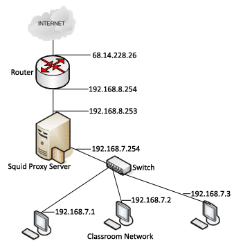

Joey's Notes: Using Squid Web proxy to control Web access
By Joey Prestia

This month's article covers configuration of the Squid proxy server on RHEL 5.x. Squid is best known for its Web proxy caching functionality; it's deployed in a vast number of installations in this aspect, and can drastically reduce server load by reusing commonly requested Web pages. It is also very handy as an access control mechanism for managing an internal network. Squid is very effective - but it takes proper configuration to make it do exactly what you want. This article is intended as a guide for achieving that configuration.
The Squid configuration file that comes packed with version 2.6 for RHEL-5.x has some 4,325 lines in it. That's a big file, and it's easy to lose track of what's been done in it. In my opinion, it is best to use external files to deal with frequent changes - By doing things in this modular fashion, changes can be done quickly and safely. So, after making a backup of the original, we'll get started.
Access control listsAccess control lists work very simply in Squid. These definitions come directly from the Squid site http://www.squid-cache.org/Doc/config/acl/, where you will find a multitude of ACL guidelines and samples. Here are the basics, to get you up and running:
Defining an Access List Every access list definition must begin with an aclname and acltype, followed by either type-specific arguments or a quoted filename that they are read from. acl aclname acltype argument ... acl aclname acltype "file" ... When using "file", the file should contain one item per line. By default, regular expressions are CASE-SENSITIVE. To make them case-insensitive, use the -i option.
Some examples:
acl aclname acltype (ip-address/netmask or .domain.com) acl aclname src ip-address/netmask # clients IP address acl aclname src addr1-addr2/netmask # range of addresses acl aclname dst ip-address/netmask # URL host's IP address acl aclname myip ip-address/netmask # local socket IP address acl aclname srcdomain .foo.com # reverse lookup, from client IP acl aclname dstdomain .foo.com # Destination server from URL acl aclname dstdomain "/etc/squid/allow/safe-sites" # file must exist acl aclname srcdom_regex [-i] \.foo\.com ... # regex matching client name acl aclname dstdom_regex [-i] \.foo\.com ... # regex matching server http_access allow aclname # allow access http_access deny aclname # deny access http_access allow localhost # allow localhost http_access deny all # deny access not specifically allowedCaching Server
The image below is an example of how our classrooms are set up here at my college. The proxy has multiple network cards in it and acts as a simple caching proxy.

Getting Squid up and running as a simple caching proxy web server is
very easy, and can save on bandwidth. We can just change the default
listening port, define a source network address, set that up with an
http_access allow aclname, and be done with it. The
lines we will need to search for and modify in the squid.conf file are
shown below, along with the changes I made.
# Squid normally listens on port 3128 #http_port 3128 # Joey 1-12-09 changed http_port to use port 80 http_port 80 #acl our_networks src 192.168.1.0/24 192.168.2.0/24 #http_access allow our_networks # Joey 1-12-09 changed source network for caching acl our_networks src 192.168.7.0/24 http_access allow our_networks
For a caching server, you would merely have to modify the lines as shown above, adjust the network source address(es) to accommodate your situation, save the changes, and restart the server. Then, point your internal machines to this server's IP address and port as their proxy. Don't forget to check your firewall to make sure connections are permitted.
Configuration for Restricting Sites
Let's say our employer wants to prevent all employees from accessing Web sites that are detrimental to productivity. That is an ideal job for Squid.
As always, you should have a good concept of the big picture as pertains to your company, so that you can design your implementation well. Important factors include the company's projected growth and overall business plan: don't build a non-scalable network, for instance. You most certainly do not want to spend a lot of time fixing problems caused by unexpected company growth.
The following configuration samples may be used individually or in combination. When making changes, it's best to do one at a time, reload Squid, and test your results before going on.
Setting Default Port
To get this up and running, there are some things we might want to modify.
For example, the default http_port is 3128: most admins will
want to change that.
# Squid normally listens on port 3128 http_port 3128Visible Hostname
The next thing we want to set is the visible_hostname directive. This will make it easier for you to find the appropriate server if needed, and make changes if an issue arises. You can specify what you want, or you can have the return value of gethostname() as stated in the comments. It is mainly useful for managing clusters.
# TAG: visible_hostname # If you want to present a special hostname in error messages, etc, # define this. Otherwise, the return value of gethostname() # will be used. If you have multiple caches in a cluster and # get errors about IP-forwarding you must set them to have individual # names with this setting. # visible_hostname restrictor1.example.comCache Manager
You will probably want to have the e-mail address of the cache administrator displayed. This would, for example, allow a junior member to receive requests for access, and update the access files as needed.
# ADMINISTRATIVE PARAMETERS # ----------------------------------------------------------------------------- # TAG: cache_mgr # Email-address of local cache manager who will receive # mail if the cache dies. The default is "root". # #Default: # cache_mgr root # Joey 1-12-09 changed cache_mgr to Orion. He has permissions to # authorize and allow new sites and reload Squid. cache_mgr orion@example.com
The following configuration examples are various ACL rules that you may want to change.
Unrestricted Access for a Subnet
This one will allow unrestricted access for a subnet, if the server is on
several networks. Set the source src network in a statement
and allow unrestricted access for administrators (or others).
# INSERT YOUR OWN RULE(S) HERE TO ALLOW ACCESS FROM YOUR CLIENTS # Example rule allowing access from your local networks. Adapt # to list your (internal) IP networks from where browsing should # be allowed #acl our_networks src 192.168.1.0/24 192.168.2.0/24 #http_access allow our_networks # Joey 1-12-09 allow unrestricted access for admin staff on subnet acl admin src 192.168.5.0/24 http_access allow adminUsing Reference Files to Control Access
Here, you need to create a directory and put the files you reference in it. The files should contain the domains you will allow or deny access to.
# Joey 1-12-09 otherguys are all other employees and have restrictions # Edit the referenced file - not this one - to make a change!!! acl otherguys dstdomain "/etc/squid/approved-sites/safe-sites-gov" acl otherguys dstdomain "/etc/squid/approved-sites/safe-sites-com" acl otherguys dstdomain "/etc/squid/approved-sites/safe-sites-net" acl otherguys dstdomain "/etc/squid/approved-sites/safe-sites-edu" acl otherguys dstdomain "/etc/squid/approved-sites/safe-sites-org" acl otherguys dstdomain "/etc/squid/approved-sites/safe-sites-non-us" http_access allow otherguys # And finally, deny all other access to this proxy http_access allow localhost http_access deny all
This is what our safe-sites-org reference file could contain. Note that the file should contain one item per line. The comments are strictly for future reference.
.pbs.org # PBS - News .publicagenda.org # Public Agenda - News .ortl.org # Oregon Right to Life - Research .acponline.org # American College of Physicians - Research .afsp.org # American Foundation Suicide Prevention - Research .dioceseofnewark.org # Episcopal Diocese - Research .internationaltaskforce.org # Task Force on Euthanasia - Research .policyalmanac.org # Almanac of Policy Issues - Research .content.nejm.org # The New England Journal of Medicine - Research .npr.org # NPR - News .ncsl.org # National Conference of State Legislatures - ResearchACL to Restrict Allowed User Agents
Maybe you've heard by now that Internet Explorer has a lot of vulnerabilities? Why not just prevent it from being used, altogether? This ACL does just that.
#acl with_allowed_useragents browser (Firefox) acl MSIE browser MSIE http_access deny MSIEConclusion
Most new users trying out Squid get intimidated by the number of comments
in the file, and quickly get discouraged when trying to set it up. There are
lots of configurable options in Squid, and it can take time to learn them
and get the setup just right. The way to success is to change only one
option at a time and make sure it works properly before moving on. Students
frequently come into the Red Hat lab, try to configure multiple options at
once, and break Squid because of it. It also pays to use tail -f
/var/log/squid/access.log to watch and read messages. Another good
troubleshooting method is to run Squid in debug mode, with squid -NCd1
. Squid has countless possibilities, and this article goes
into just a few of them. Be sure to read the manual, and see more of what it
can do.
- Squid Website
- Jang, Michael. RHCE Red Hat Certified Engineer Linux Study Guide (Exam RH302) (Certification Press). New York: McGraw-Hill Osborne Media, 2007.
Talkback: Discuss this article with The Answer Gang
![[BIO]](../gx/authors/prestia.jpg)
Joey was born in Phoenix and started programming at the age fourteen on a Timex Sinclair 1000. He was driven by hopes he might be able to do something with this early model computer. He soon became proficient in the BASIC and Assembly programming languages. Joey became a programmer in 1990 and added COBOL, Fortran, and Pascal to his repertoire of programming languages. Since then has become obsessed with just about every aspect of computer science. He became enlightened and discovered RedHat Linux in 2002 when someone gave him RedHat version six. This started off a new passion centered around Linux. Currently Joey is completing his degree in Linux Networking and working on campus for the college's RedHat Academy in Arizona. He is also on the staff of the Linux Gazette as the Mirror Coordinator.